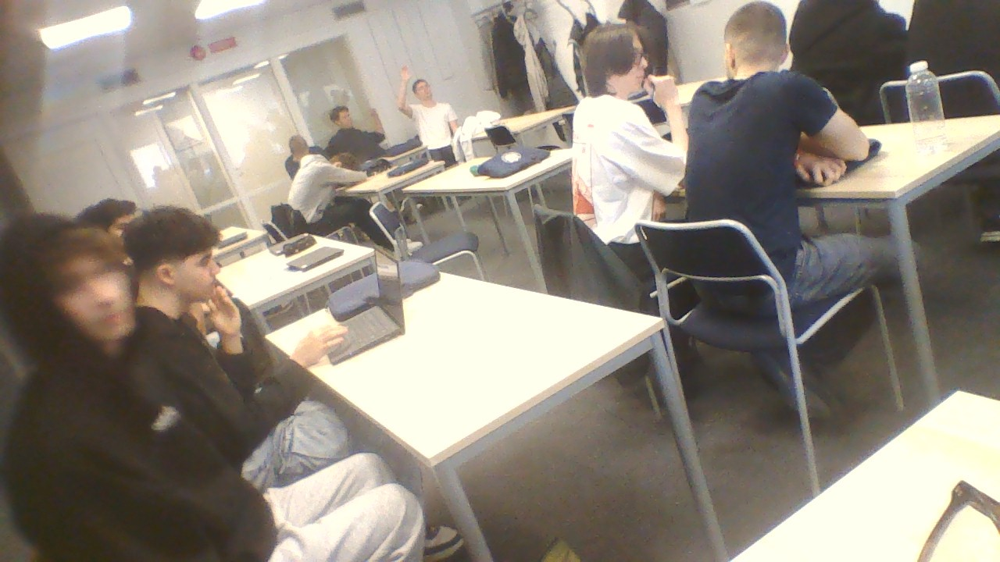

På vår skola finns många klasser som utmärker sig, men det är TEI23A som verkligen har gjort sig ett namn som den bästa klassen.
Med en unik kombination av kunskap, gemenskap och omtanke har TEI23A blivit favoriter bland både elever och lärare. Det är en klass som visar att hårt arbete och god sammanhållning går hand i hand.
En av de mest framträdande egenskaperna hos TEI23A är deras starka sammanhållning. I denna klass finns en genuin vilja att hjälpa och stötta varandra oavsett om det gäller studier, personliga utmaningar eller vardagsproblem. Det är inte ovanligt att eleverna i TEI23A samarbetar tätt och uppmuntrar varandra till att nå sina mål, vilket skapar en trygg och inkluderande miljö där alla känner sig sedda och värdefulla.
Men TEI23A är inte bara snälla och stöttande – de är också otroligt ambitiösa och målmedvetna. Oavsett ämne visar de prov på både kunskap och engagemang, och deras prestationer talar för sig själva.
Flera elever i klassen hör till de högst presterande i hela skolan, och deras vilja att ständigt utvecklas och förbättras är imponerande. Det är tydligt att TEI23A tar sin utbildning på stort allvar, samtidigt som de har roligt och trivs tillsammans.
Det som verkligen gör TEI23A till skolans bästa klass är balansen mellan prestation och personlighet. Här finns en varm och välkomnande atmosfär där eleverna vågar vara sig själva, samtidigt som de strävar efter att bli sina bästa versioner både akademiskt och socialt. Denna mix av duktighet, omtanke och positiva attityder gör att TEI23A ofta uppmärksammas som en förebild för andra klasser.
Lärarna är också eniga om att TEI23A sticker ut på ett positivt sätt.
Tei23A De beskriver klassen som ansvarstagande, nyfikna och engagerade, och många lärare ser fram emot varje lektion med TEI23A. Den respekten och uppskattningen visar hur mycket klassen har vuxit och hur starkt deras rykte har blivit.
Sammanfattningsvis är TEI23A mer än bara en klass – de är en sammansvetsad grupp som visar vad det innebär att vara bäst på riktigt. Med deras duktighet, omtänksamhet och engagemang har de blivit skolans favoriter och ett lysande exempel på hur man kan kombinera gemenskap med framgång. TEI23A är utan tvekan den bästa klassen på skolan, och deras framgångar kommer garanterat att fortsätta i framtiden.
Här är tei23a
 Det är med stor glädje och stolthet jag kan berätta att jag har fått ett diplom för omtanke. Denna utmärkelse är en fin bekräftelse på hur viktigt det är att visa vänlighet, respekt och hjälpsamhet i vardagen, och det känns fantastiskt att mitt engagemang har uppmärksammats.
Att få diplom för omtanke betyder mycket för mig eftersom det speglar min vilja att göra skillnad för andra både i skolan och utanför. Jag tror starkt på att små handlingar av omtanke kan skapa stora positiva effekter, och jag försöker alltid finnas där för mina klasskamrater när de behöver stöd eller bara en vänlig gest.
Det här diplomet är inte bara ett bevis på min egen insats, utan också ett tecken på den värme och gemenskap som finns i vår klass TEI23A. DIPLOOOM
Vi uppmuntrar varandra att vara snälla och hjälpsamma, och tillsammans skapar vi en trygg och positiv miljö där alla kan känna sig sedda och respekterade.
Jag ser detta diplom som en motivation att fortsätta sprida omtanke och göra skolan till en bättre plats för alla. Att bli erkänd för omtanke är en påminnelse om att just dessa värden är minst lika viktiga som akademiska prestationer, och att det är något vi alla kan bidra med varje dag.
Elif Cifoglu
ENär vinterkylan biter som allra hårdast är det lätt att glömma bort hur viktigt det är att skydda sig ordentligt särskilt öronen.
Därför är öronmuffar ett riktigt smart och praktiskt tillbehör som borde vara en självklarhet för alla under de kalla månaderna.
Öronmuffar håller dina öron varma och skyddade mot den kalla vinden och snön, vilket gör att du slipper den obehagliga känslan av kalla och stela öron. Utan ordentligt skydd är öronen extra utsatta eftersom huden där är tunn och känslig, vilket kan leda till obehag och i värsta fall frysskador. Med ett par sköna öronmuffar slipper du detta och kan njuta av vinterdagarna utan att frysa.
Utöver värmen är öronmuffar också praktiska. De är lätta att ta på och av, skaver inte som vissa mössor kan göra, och finns i många olika modeller och färger som passar just din stil. För barn och vuxna är öronmuffar därför en flexibel lösning som både värmer och ser bra ut.
Dessutom kan öronmuffar hjälpa till att minska buller från omgivningen, vilket gör det lättare att koncentrera sig eller bara njuta av tystnaden när snön faller.
Sammanfattningsvis är öronmuffar ett oumbärligt vinterplagg som kombinerar komfort, skydd och stil. Vill du slippa frysa om öronen och samtidigt se bra ut är öronmuffar definitivt ett måste i vinter!
ELif blev tei23a s första diplomtagare för omtanke! Grattis elif du förtjänar det!
Öron muffar